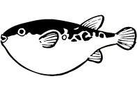

2012年3月号
「河豚」は「ふぐ」ではなく「ふく」と読むの？

冬が旬の味覚といえは「河豚」が代表的ですね。
食の言葉でも「河豚は食いたし命は惜しし」といわれるほどです。
でもなぜ、「河の豚」と書くのでしょう？
有力な説として次のようなものがありますが、みなさんはどれだと思いますか。
①中国の長江に生息するメフグがブーブーと豚のように鳴くからという説。
②中国では美味しい肉のことを「豚」と呼び、「河で獲れる美味しい肉」という説。
③ふくれることに由来しているという説。
④「フクベ」が語源で、＝「ひょうたん」という説。
という具合に諸説あり、どれも正解のような気がしてきますね。
関西以南では「フグ」と濁らず、「フク」といい「福」にひっかけて、ゲンをかついだとか。「フグ」は「不具」となるため忌み嫌われたようです。
また、大阪ではフグのことを「鉄砲」と呼びます。「フグも鉄砲も当たれば死ぬから」という大阪ならではの洒落のきいた言葉ですね！そして河豚の刺身を「テッサ」（鉄の刺身）、河豚のちり鍋を「テッチリ」（鉄のちり鍋）と呼ぶのはとても有名です。
みなさんも冬の味覚、「河豚（福）」を味わって幸せを広げましょう！
「河豚は食いたしおカネは惜しし」では幸せが「不具」になってしまいますよ！
食の言葉でも「河豚は食いたし命は惜しし」といわれるほどです。
でもなぜ、「河の豚」と書くのでしょう？
有力な説として次のようなものがありますが、みなさんはどれだと思いますか。
①中国の長江に生息するメフグがブーブーと豚のように鳴くからという説。
②中国では美味しい肉のことを「豚」と呼び、「河で獲れる美味しい肉」という説。
③ふくれることに由来しているという説。
④「フクベ」が語源で、＝「ひょうたん」という説。
という具合に諸説あり、どれも正解のような気がしてきますね。
関西以南では「フグ」と濁らず、「フク」といい「福」にひっかけて、ゲンをかついだとか。「フグ」は「不具」となるため忌み嫌われたようです。
また、大阪ではフグのことを「鉄砲」と呼びます。「フグも鉄砲も当たれば死ぬから」という大阪ならではの洒落のきいた言葉ですね！そして河豚の刺身を「テッサ」（鉄の刺身）、河豚のちり鍋を「テッチリ」（鉄のちり鍋）と呼ぶのはとても有名です。
みなさんも冬の味覚、「河豚（福）」を味わって幸せを広げましょう！
「河豚は食いたしおカネは惜しし」では幸せが「不具」になってしまいますよ！
 次月号へ
次月号へ